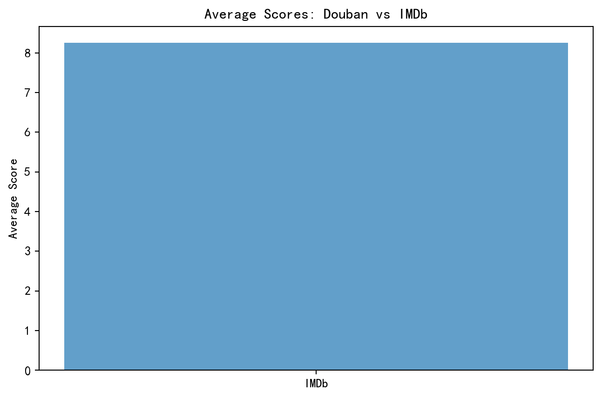
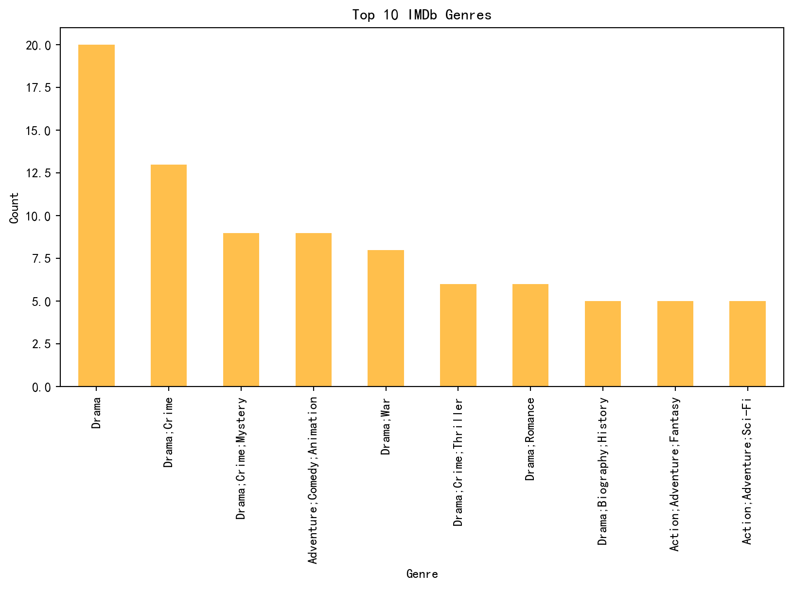

from bs4 import BeautifulSoupimport reimport urllib.request, urllib.error # for URL requestsimport csv # for saving as CSVdef main(): baseurl ="https://movie.douban.com/top250?start=" datalist = getdata(baseurl) savepath ="./file/douban_top250.csv" savedata(datalist, savepath)# Regular expressions to extract informationfindLink = re.compile(r'<a href="(.*?)">') # detail linkfindImgSrc = re.compile(r'<img.*src="(.*?)"', re.S) # image linkfindTitle = re.compile(r'<span class="title">(.*)</span>') # movie titlefindRating = re.compile(r'<span class="rating_num" property="v:average">(.*)</span>') # ratingfindJudge = re.compile(r"<span>(\d*)人评价</span>") # number of reviewsfindInq = re.compile(r'<span class="inq">(.*)</span>') # summaryfindBd = re.compile(r'<p class="">(.*?)</p>', re.S) # additional info# Function to get data from the websitedef getdata(baseurl): datalist = []for i inrange(0, 10): url = baseurl +str(i *25) # Go to the next page html = geturl(url) soup = BeautifulSoup(html, "html.parser")for item in soup.find_all("div", class_="item"): # Extract movie items data = [] # Save movie data item =str(item) # Convert to string for regex link = re.findall(findLink, item)[0] # Detail link data.append(link) imgSrc = re.findall(findImgSrc, item)[0] # Image link data.append(imgSrc) titles = re.findall(findTitle, item) # Titles (CN and foreign)iflen(titles) ==2: data.append(titles[0]) # Chinese title data.append(titles[1].replace("/", "").strip()) # Foreign titleelse: data.append(titles[0]) # Only Chinese title data.append(" ") # Empty for foreign title rating = re.findall(findRating, item)[0] # Rating data.append(rating) judgeNum = re.findall(findJudge, item)[0] # Number of reviews data.append(judgeNum) inq = re.findall(findInq, item) # Summaryiflen(inq) !=0: data.append(inq[0].replace("。", ""))else: data.append(" ") bd = re.findall(findBd, item)[0] # Additional info bd = re.sub(r"<br(\s+)?/>(\s+)?", " ", bd) # Replace line breaks bd = re.sub("/", " ", bd) # Replace slashes data.append(bd.strip()) datalist.append(data)return datalist# Function to save data to a CSV filedef savedata(datalist, savepath): headers = ["电影详情链接","图片链接","影片中文名","影片外国名","评分","评价数","概况","相关信息", ]withopen(savepath, mode="w", encoding="utf-8", newline="") asfile: writer = csv.writer(file) writer.writerow(headers) # Write headersfor data in datalist: writer.writerow(data) # Write each movie's data# Function to get HTML content from a URLdef geturl(url): head = {"User-Agent": "Mozilla/5.0 (Windows NT 10.0; Win64; x64) ""AppleWebKit/537.36 (KHTML, like Gecko) Chrome/86.0.4240.111 Safari/537.36" } req = urllib.request.Request(url, headers=head)try: response = urllib.request.urlopen(req) html = response.read().decode("utf-8")except urllib.error.URLError as e:ifhasattr(e, "code"):print(e.code)ifhasattr(e, "reason"):print(e.reason)return""return htmlif__name__=="__main__": main()print("爬取成功并保存为CSV文件！")
import pandas as pdimport matplotlib.pyplot as pltimport matplotlib# 设置中文字体matplotlib.rcParams['font.sans-serif'] = ['SimHei'] # 使用黑体matplotlib.rcParams['axes.unicode_minus'] =False# 解决负号显示问题# Load datasetsdouban_file_path ="./file/douban_top250.csv"imdb_file_path ="./file/IMDB_Top250.csv"douban_data = pd.read_csv(douban_file_path, encoding="utf-8", on_bad_lines="skip")imdb_data = pd.read_csv(imdb_file_path, encoding="utf-8", on_bad_lines="skip")# Renaming columns for clarity and merging compatibilitydouban_data.rename( columns={"影片中文名": "Title","评分": "Douban_Score","评价数": "Douban_Reviews","相关信息": "Douban_Info", }, inplace=True,)imdb_data.rename( columns={"Name": "Title","Year": "Release_Year","IMDB Ranking": "IMDB_Score","Genre": "IMDB_Genre","Director": "IMDB_Director", }, inplace=True,)# Calculate average scores for both platformsdouban_avg_score = douban_data["Douban_Score"].mean()imdb_avg_score = imdb_data["IMDB_Score"].mean()# Find overlapping movies by titleoverlap_movies = pd.merge(douban_data, imdb_data, on="Title")# Visualize average scoresplt.figure(figsize=(8, 5))plt.bar(["Douban", "IMDb"], [douban_avg_score, imdb_avg_score], alpha=0.7)plt.title("Average Scores: Douban vs IMDb")plt.ylabel("Average Score")plt.show()# Analyze release year distributionplt.figure(figsize=(10, 5))douban_data["Douban_Info"] = douban_data["Douban_Info"].astype(str)douban_years = douban_data["Douban_Info"].str.extract(r"(\d{4})").dropna()# 调试输出print("Extracted years from Douban_Info:")print(douban_years.head())# 检查 douban_years 是否为空ifnot douban_years.empty:try: douban_years = douban_years[0].astype(int).value_counts().sort_index()exceptKeyError:print("KeyError: Column index 0 does not exist in douban_years") douban_years = pd.Series(dtype=int)exceptValueError:print("ValueError: Cannot convert column to integer") douban_years = pd.Series(dtype=int)else:print("No years extracted from Douban_Info")# 检查 imdb_years 是否为空imdb_years = imdb_data["Release_Year"].value_counts().sort_index()# 绘制图表ifnot douban_years.empty andnot imdb_years.empty: douban_years.plot(kind="bar", alpha=0.7, label="Douban", figsize=(10, 5)) imdb_years.plot(kind="bar", alpha=0.7, label="IMDb", color="orange") plt.title("Release Year Distribution") plt.xlabel("Year") plt.ylabel("Number of Movies") plt.legend() plt.show()else:print("Cannot plot Release Year Distribution as one or both datasets are empty.")# Analyze genre distributionimdb_genres = ( imdb_data["IMDB_Genre"].str.split(",").explode().str.strip().value_counts())# 检查 imdb_genres 是否为空ifnot imdb_genres.empty: plt.figure(figsize=(10, 5)) imdb_genres.head(10).plot(kind="bar", alpha=0.7, color="orange") plt.title("Top 10 IMDb Genres") plt.xlabel("Genre") plt.ylabel("Count") plt.show()else:print("Cannot plot Top 10 IMDb Genres as the dataset is empty.")# Top directors by movie countdouban_directors = douban_data["Douban_Info"].str.extract(r"导演: (.+?) ").dropna()douban_top_directors = douban_directors[0].value_counts().head(10)imdb_top_directors = imdb_data["IMDB_Director"].value_counts().head(10)# 检查 douban_top_directors 是否为空ifnot douban_top_directors.empty: plt.figure(figsize=(10, 5)) douban_top_directors.plot(kind="bar", alpha=0.7, label="Douban", color="blue") plt.title("Top 10 Douban Directors") plt.xlabel("Director") plt.ylabel("Movie Count") plt.show()else:print("Cannot plot Top 10 Douban Directors as the dataset is empty.")# 检查 imdb_top_directors 是否为空ifnot imdb_top_directors.empty: plt.figure(figsize=(10, 5)) imdb_top_directors.plot(kind="bar", alpha=0.7, label="IMDb", color="orange") plt.title("Top 10 IMDb Directors") plt.xlabel("Director") plt.ylabel("Movie Count") plt.show()else:print("Cannot plot Top 10 IMDb Directors as the dataset is empty.")# Save overlapping movies to a CSV fileoverlap_movies.to_csv("./file/overlap_movies.csv", index=False)# Print resultsprint(f"豆瓣平均评分: {douban_avg_score}")print(f"IMDb平均评分: {imdb_avg_score}")print(f"重叠电影数量: {len(overlap_movies)}")

Extracted years from Douban_Info:
Empty DataFrame
Columns: [0]
Index: []
No years extracted from Douban_Info
Cannot plot Release Year Distribution as one or both datasets are empty.
<Figure size 960x480 with 0 Axes>

Cannot plot Top 10 Douban Directors as the dataset is empty.